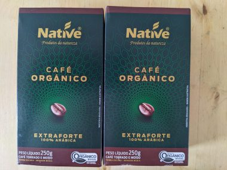
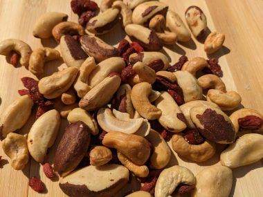
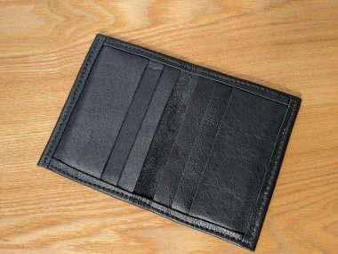
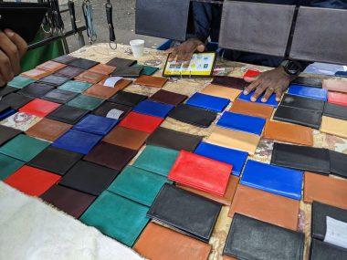

スーパーで買えるブラジル旅行のおすすめのお土産
前回：サンパウロ観光～持ってきて良かったもの～
ブラジル土産といえば、やはりコーヒーは欠かせない。本当においしいのだ。
↓オーガニックのコーヒー。
カルフールというスーパーで買った。カルフールは街中ではコンビニ的存在で、規模もコンビニサイズの小さめ店がいたるところにあるが、このコーヒーはどこの店でもおいている。

↓ ブラジルナッツとカシューナッツとクコの実。

一番大きいのがブラジルナッツ。くせはなく食べやすい。栄養価も高い。ブラジル原産であり、カナダで買うよりも安い。
↓カードケース。

ポイント活動に熱心に従事していると、カード類が増えてしまってしかたがない。そこでこんなシンプルなカードケースをずっと探していた。本革特有の柔らかさがあり、軽い。大量生産品と違い手作りのぬくもりが感じられる。値段を聞くと八百円くらいだったので、値切らず買った。
パウリスタ通りのトリアノン公園前の露店で買った。パウリスタ通りは週末歩行者天国になり、様々なものを売る露店が並ぶ。興味津々でぶらぶらひやかして歩くのがおもしろかった。

ブラジルは皮革産業が盛んな国なので、上質で素敵な靴でも買えればとおもっていた。数多くある広大なショッピングモールをぶらぶらすれば買えたかもしれないが、露店でのショッピングの方がずーっと楽しいのだ。
↓使ってます。

 180以上の国と地域で使える【World eSIM】
180以上の国と地域で使える【World eSIM】